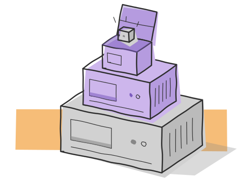

vmmanager
a native gtk4 desktop app for managing qemu/kvm virtual machines and incus/lxd containers — from one window.

what it is
think proxmox — but as a compiled c binary on your desktop. a native desktop interface using gtk4, libvirt, and libcurl. one binary that manages both qemu/kvm virtual machines and incus/lxd containers from a single gtk4 interface.
i wrote it in c on purpose. i wanted to talk to libvirt directly as a c library, drive the incus rest api over its unix socket with libcurl, and feel where the real complexity in virtualization management lives — instead of letting a high-level framework hide it from me.
where it stands
documented implementation: a gtk4 app with vm and container lifecycle controls, snapshots, monitoring, and console access. the source and setup requirements are available in the repository.
scope: a desktop management client for an existing virtualization setup. it depends on the relevant host services and libraries.
what it does
move a virtual machine through its states
each button is the libvirt call vmmanager makes. try one that isn't allowed from the current state and libvirt says no. a simplified model that runs in your browser; no machine is touched.
| from | call | to |
|---|---|---|
| not defined | virDomainDefineXML | shut off |
| shut off | virDomainCreate | running |
| running | virDomainSuspend | paused |
| paused | virDomainResume | running |
| running | virDomainShutdown | shut off (the guest is asked politely) |
| running or paused | virDomainDestroy | shut off (pulled, like the plug) |
| shut off | virDomainUndefine | not defined |
architecture
the gui is two gtk4 panels — one for vms, one for containers. underneath, the vm panel speaks to libvirt as a c library, and the container panel speaks the incus rest api through libcurl over a unix socket. those two adapters fan out to qemu/kvm and incus/lxd respectively. that's the whole shape: a thin, honest layer over the tools that already do the heavy lifting.
engineering field notes
- the hard part
- memory ownership around gtk widgets, parsing api responses, and handling a socket that stops responding.
- the tradeoff
- c and direct library calls take more care than a higher-level wrapper. they also make the boundaries of the system visible.
- what i'd improve next
- make connection loss, recovery, and failed operations easier to understand from the interface.
built by dharun ashokkumar